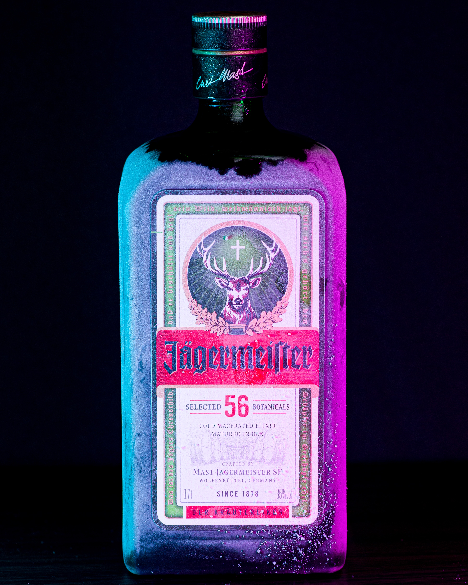

- 술 종류
- 기법
- 레시피
- 도구
리큐르
리큐르는 혼성주이다. 혼성주란 증류주(주정)에 초근목피 등 색, 향, 맛을 내는 재료와 당분을 더한 술로서, 초기에는 약용이 목적이었으며, 현재는 식후주로 많이 애용되고 있다.
리큐르의 분류
약초, 향초류 : 압생트, 아니세트, 베네딕틴, 캄파리, 샤르트뢰즈, 시나, 갈리아노, 예거마이스터, 큐멜, 파르페 아무르, 페르노, 리카르, 삼부카
과실류 : 쿠앵트로, 큐라소, 그랑 마니에, 트리플 섹, 피치 트리, 애플 퍼커, 애프리 코트 브랜디, 체리 브랜디, 마라스퀸, 슬로진, 크렘 드 카시스, 멜론 리큐어
종자류 : 칼루아, 크램 드 카페, 티아 마리아, 아마레토, 크렘 드 카카오, 쇼콜라 스위스
기타 : 드람부이, 아이리시 미스트, 아드보카트, 베일리스, 앙고스투라 비터
리큐르 특징
- 화려한 색채를 지녀 액체의 보석이라고 부른다.
- 당분을 함유하고 잇어 주로 식후주로 마시며 코디알이라고도 부른다.
- 초기에는 약용 목적으로 여러 가지 약초를 사용했고, 19세기 연속식 증류기의 개발 이후 주정을 원료로 한 다양한 리큐르들이 생산되었다.
- 리큐르로 인해 칵테일의 색, 향, 맛이 다양해졌다.
리큐르의 제조방법
증류법 : 주정에 배합재료를 담근 다음 증류하여 설탕 등을 넣어 단맛을 내고 향료를 넣어 향미를 낸다.
에센스법 : 주정에 천연 또는 합성향료나 정유를 가하여 만드는 방법이며, 질이 낮다.
침출법 : 주정에 과실이나 초근목피를 담가 그 성분이나 향미를 우려내는 방법으로 많이 쓰는 방법이며, 콜드 방식이라고 한다. 가장 시간이 많이 소요되는 방법이다.
여과법 : 커피 만드는 방법과 비슷하게 여과시켜 만든다.
